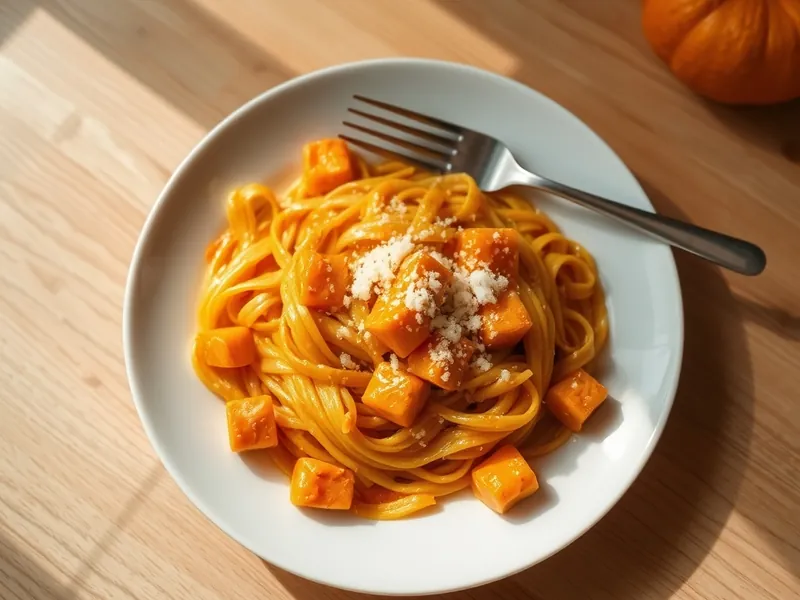

Фото: Иллюстрация ИИ, Cloudflare Workers AI
Паста с тыквой в сливочном соусе
Паста с мягкой обжаренной тыквой, сливками, пармезаном и мускатным орехом
25 мин2 порц.660 ккал на порциюБ 19 · Ж 29 · У 79Итальянская кухня
Открыть в приложении: порции, таймеры, список покупок
Продукты на 2 порц.
- Макароны200 г
- Тыква300 г
- Сливки 20%100 мл
- Пармезан30 г
- Чеснок1 зуб.
- Сливочное масло1 ст. л.
- Оливковое масло1 ст. л.
- Мускатный орех1 щеп.
- Соль2 ч. л.
- Вода2000 мл
Как готовить
- Тыкву очистите и нарежьте кубиками 1,5 см. Поставьте воду для пасты на сильный огонь.
- Разогрейте оливковое и сливочное масло на сковороде на среднем огне, обжарьте тыкву с чесноком 10-12 минут, пока кубики не станут мягкими и не начнут разминаться лопаткой.
- Посолите воду и сварите пасту по инструкции на упаковке, обычно 8-10 минут.
- Влейте к тыкве сливки, добавьте мускатный орех и соль, разомните часть тыквы до пюре и томите 2 минуты.
- Откиньте пасту, смешайте с соусом, подлив 2-3 ложки воды от пасты, и посыпьте пармезаном.
Совет. Сладкие сорта тыквы, например мускатная, дают самый яркий вкус. Для детей можно размять всю тыкву, тогда соус получится однородным.